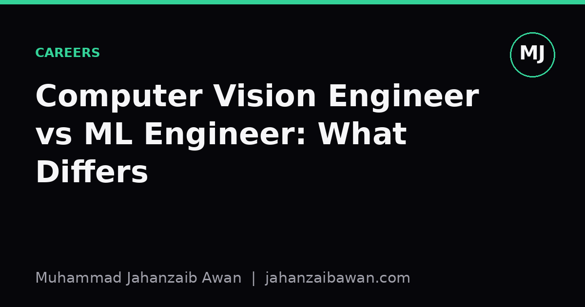

Computer Vision Engineer vs ML Engineer: What Differs
Job titles in machine learning overlap so heavily that postings for the same role can look completely different. Here is how I actually tell them apart.

Why the confusion is real
I have read job descriptions titled 'Machine Learning Engineer' that ask for three years of experience with object detection pipelines and camera calibration, and others titled 'Computer Vision Engineer' that spend most of the text talking about feature stores, batch inference jobs, and tabular fraud models with no images in sight. The titles are not being used consistently across companies, and that is worth naming plainly rather than pretending there is a clean industry standard hiding somewhere.
Part of the reason is historical. Computer vision existed as a discipline long before deep learning made it fashionable, built on decades of work in optics, geometry, and classical image processing. Machine learning engineering, as a title, grew out of the need to bridge data science and software engineering once companies started shipping models into production at scale. The two lineages met in the middle once convolutional networks became the default tool for vision problems, and the job titles never quite sorted themselves out afterwards.
This matters practically because if you are job hunting, or hiring, or just trying to plan your own learning path, you cannot rely on the title alone to tell you what the role involves. You have to read the actual responsibilities and, ideally, ask what a typical week looks like. I think it is worth being precise about where the roles genuinely diverge, because that precision saves everyone from wasted interviews and mismatched expectations.
Where the skill sets actually diverge
A computer vision engineer role tends to concentrate on the input side of the pipeline: image and video data specifically, with all the domain quirks that come with it. That means understanding camera geometry, lens distortion, colour spaces, sensor noise, and how to augment images in ways that reflect real-world variation rather than arbitrary transformations. It also means being comfortable with architectures built for spatial data, such as convolutional networks, vision transformers, and detection or segmentation heads, and knowing the practical trade-offs between them at different resolutions and latency budgets.
A machine learning engineer role, by contrast, is usually defined by breadth across data types and a heavier emphasis on the systems side: training pipelines, feature engineering across structured and unstructured data, experiment tracking, model versioning, and serving infrastructure. The modelling work can involve gradient boosted trees on tabular data one week and a recommendation model the next, with vision being just one of several possible domains rather than the core specialism. The unifying skill is less about any one data type and more about making the whole lifecycle, from data ingestion to monitoring in production, robust and repeatable.
Where this gets interesting is in evaluation practice, which is my own particular concern. A vision-focused role will often need mean average precision for detection tasks, intersection over union thresholds for segmentation, and careful attention to how a test set's images were collected, because near-duplicate frames from the same video sequence leaking across train and test splits is a classic and quietly damaging mistake. A general ML engineering role is more likely to be reasoning about calibration, drift detection, and whether a model that scored well offline is still performing well against a live population three months after deployment. Both are rigorous, but the specific traps differ.
A concrete worked comparison
Imagine two teams at the same retail company. One team is building a system to count footfall from in-store camera feeds and flag when queues get too long. The other team is building a system to predict which customers are likely to churn based on purchase history, app usage, and support tickets. Both teams might advertise for an 'ML Engineer', but the actual day-to-day work is quite different.
The footfall team spends real time on things like camera placement affecting occlusion rates, choosing a detection model that runs fast enough on edge hardware near the cameras rather than in a distant data centre, and validating that accuracy holds up under different lighting conditions across the day. If their detector reports a false positive rate of four percent in daytime footage but climbs to eleven percent at dusk, that is a vision-specific failure mode tied to sensor behaviour, and fixing it means thinking about the physical environment, not just the model architecture.
The churn team, meanwhile, spends its time on feature pipelines that pull from three different internal databases, on making sure the training data reflects a realistic time-ordered split so that future information cannot leak backwards into past predictions, and on setting up alerts for when the input feature distributions start drifting away from what the model was trained on. If churn predictions look great in offline validation with an AUC of 0.81 but the business team reports the flagged customers do not match intuition, the debugging path runs through data pipeline logic and business definitions of churn, not through anything resembling image processing.
Both engineers need to know how to train a model, split data honestly, and communicate uncertainty to non-technical stakeholders. But one needs to think like someone who understands physical scenes and sensors, and the other needs to think like someone who understands sprawling, heterogeneous data infrastructure. The overlap in title hides a real divergence in the muscle memory each job builds over time.
What this means in practice
If you are applying for roles, I would treat the job title as a rough filter at best and read the responsibilities section as the actual source of truth. Look specifically for mentions of data modality, the kind of infrastructure involved, and what a typical evaluation metric or failure mode sounds like in the description. A posting that talks about annotation quality, frame rates, and augmentation strategy is signalling something quite different from one that talks about feature stores, A/B testing frameworks, and pipeline orchestration, even under an identical job title.
If you are hiring, the practical fix is simple: write the responsibilities honestly and specifically rather than defaulting to whichever title sounds most current. Naming the actual data and systems involved will attract candidates whose experience genuinely matches, and it will save interview time that would otherwise be spent discovering the mismatch three rounds in.
For anyone building their own skills, my honest advice is to stop worrying about which title fits and instead get precise about the two separate competencies underneath: understanding a specific data domain deeply, whether that is vision, language, or tabular systems, and understanding how to build reliable, monitored pipelines around any model regardless of domain. Most strong engineers I have come across eventually end up reasonably capable in both, but they got there by being deliberate about which gap they were closing at any given time, not by chasing the title that seemed to be in fashion.